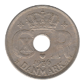
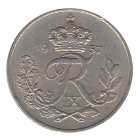
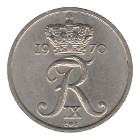
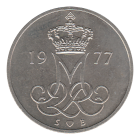

Ten Øre
Christian IX (1874-1905)
Frederik VIII (1907-1912)
Christian X (1914-1923)
1914-❤ VBPGJ
1918-❤ VBP·GJ
Christian X (1924-1947)
1924-❤ HCN·GJ
1925-❤ HCN·GJ
1926-❤ HCN·GJ
1929-❤ N·GJ
1931-❤ N·GJ Large N
1933-❤ N·GJ
 1936-❤ N·GJ
1941-❤ N·GJ Zinc
1944-❤ N·GJ
1946-❤ N·GJ
Frederik IX (1950-1960)
 1948-❤ N·S
1948-❤ N·S
1949-❤ N·S
1950-❤ N·S
1951-❤ N·S
1953-❤ N·S
1954-❤ N·S
1955-❤ N·S
 1956-❤ C·S
1956-❤ C·S
 1957-❤ C·S
1958-❤ C·S
 1960-❤ C·S
1960-❤ C·S
Frederik IX (1960-1972)
1960-❤ C·S
1961-❤ C·S
1962-❤ C·S
1963-❤ C·S
1964-❤ C·S
1965-❤ C·S
1966-❤ C·S
1967-❤ C·S
1969-❤ C·S
 1970-❤ C·S
1971-❤ C·S
1972-❤ S·S
Margrethe II (1973-1988)
1973-❤ S·B
1974-❤ S·B
1975-❤ S·B
1976-❤ S·B
 1977-❤ S·B
1980-❤ B·B
1981-❤ B·B
1982-❤ R·B
1983-❤ R·B
1984-❤ R·B
1986-❤ R·B
Back to Denmark
Back to Home